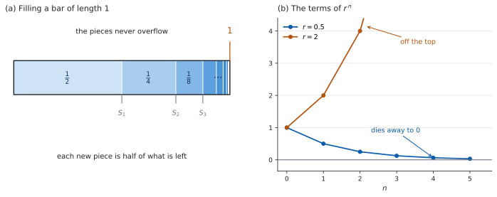

SL 1.8 — The sum of an infinite geometric series（無限等比級数の和）
- 項を無限に足しても、和が \(1\) つの値に近づくことがあると分かる。
- 公式集の \(S_{\infty} = \dfrac{u_{1}}{1-r}\) を、\(|r| < 1\) を確かめてから使える。
- modulus notation（絶対値の記号）\(|r| < 1\) を、\(-1 < r < 1\) と読みかえられる。
- convergent（収束する）と divergent（発散する）を見分けられる。
- \(S_{\infty}\) と \(u_{1}\) から \(r\) を、\(S_{\infty}\) と \(r\) から \(u_{1}\) を求められる。
- 循環小数を分数に直すのに使える。
The idea
1. 足し続けても、行き先がある
\(\dfrac{1}{2} + \dfrac{1}{4} + \dfrac{1}{8} + \cdots\) を、途中まで足してみます。
| 項の数 | 足した結果 |
|---|---|
| \(1\) | \(\dfrac{1}{2}\) |
| \(2\) | \(\dfrac{3}{4}\) |
| \(3\) | \(\dfrac{7}{8}\) |
| \(4\) | \(\dfrac{15}{16}\) |
\(1\) を超えることはありません。 毎回、残りのちょうど半分を足しているからです。

この数列は geometric sequence で、\(u_{1} = \dfrac{1}{2}\)、\(r = \dfrac{1}{2}\) です。項が毎回一定の割合（ここでは半分）で小さくなるので、足しても行き先があるのです。
「項が小さくなること」だけでは足りません。 大事なのは \(r\) の大きさで、それが \(|r| < 1\) という条件になります。
2. 公式
\[ S_{\infty} = \frac{u_{1}}{1-r} \tag{1}\]
公式集の 1.8 の欄に The sum of an infinite geometric sequence として印刷されています。条件も、そのまま書かれています。
\(S_{\infty} = \dfrac{u_{1}}{1-r}\), \(\left|r\right| < 1\)
\(|r| < 1\) を書かずに使うと、成り立たない場合にまで当てはめてしまいます（第 4 節）。
表 1 で確かめます。\(u_{1} = \dfrac{1}{2}\)、\(r = \dfrac{1}{2}\) なので、
\[ S_{\infty} = \frac{\frac{1}{2}}{1 - \frac{1}{2}} = \frac{\frac{1}{2}}{\frac{1}{2}} = 1 \]
表が近づいていた \(1\) と、合いました。
3. \(|r| < 1\) の読み方
\(|r|\) は modulus（絶対値）で、符号を外した大きさです。
\[ |3| = 3, \qquad |-3| = 3, \qquad \left|-\tfrac{1}{2}\right| = \tfrac{1}{2} \]
ですから \(|r| < 1\) は、\(r\) が \(-1\) と \(1\) の間にあるということです。
\[ |r| < 1 \iff -1 < r < 1 \tag{2}\]
\(r\) が負でもかまいません。 \(r = -\dfrac{1}{2}\) なら \(|r| = \dfrac{1}{2} < 1\) なので、和があります。項の符号が交互に変わるだけです。
\(r = -3\) は \(r < 1\) をみたしますが、\(|r| = 3\) なので和はありません。
\(3 - 9 + 27 - 81 + \cdots\) を思い浮かべてください。項が大きくなり続けます。
答案では \(|r| < 1\) と書くか、\(-1 < r < 1\) と書いてください。\(r < 1\) とだけ書くと、得点にならない可能性があります。
4. 収束と発散
\(|r| < 1\) でない場合を、\(3\) つ見ておきます。
| \(r\) | 数列 | 何が起きるか |
|---|---|---|
| \(r = 2\) | \(3, 6, 12, 24, \ldots\) | 項が大きくなる。和も限りなく大きくなる |
| \(r = 1\) | \(3, 3, 3, 3, \ldots\) | 同じ数を足し続ける。和は限りなく大きくなる |
| \(r = -1\) | \(3, -3, 3, -3, \ldots\) | 和が \(3\) と \(0\) を行き来して、\(1\) つに決まらない |
どの場合も、和が \(1\) つの値に近づきません。 このとき級数は divergent（発散する）といい、近づくときは convergent（収束する）といいます。
\(r = 1\) のときは、式 1 の分母が \(0\) になることからも分かります。式そのものが書けません。
sum to infinity の問題では、\(r\) が与えられていなければ、答案の \(1\) 行目で \(r\) を出します。
そして、\(r\) が与えられていてもいなくても、\(|r| < 1\) を確かめた、と一言書いてから公式を使ってください。「和があるか」を問う問題では、この条件の確認が採点対象になることがあります。
5. \(S_{n}\) から \(S_{\infty}\) へ
SL 1.3 の有限和の式は、公式集に \(2\) つの形で印刷されています。
\[ S_{n} = \frac{u_{1}(r^{n} - 1)}{r - 1} = \frac{u_{1}(1 - r^{n})}{1 - r}, \qquad r \neq 1 \tag{3}\]
ここでは、\(|r| < 1\) のときに扱いやすい右の形を使います。\(r \neq 1\) という条件も、公式集に書かれています。
ここで \(n\) を大きくすると、何が起きるでしょうか。\(r^{n}\) だけが動きます。
| \(n\) | \(\left(\dfrac{1}{2}\right)^{n}\) |
|---|---|
| \(1\) | \(0.5\) |
| \(2\) | \(0.25\) |
| \(3\) | \(0.125\) |
| \(10\) | \(0.000976\ldots\) |
\(r^{n}\) が \(0\) に近づくので、\(1 - r^{n}\) は \(1\) に近づきます。ですから
\[ S_{n} \to \frac{u_{1}(1 - 0)}{1-r} = \frac{u_{1}}{1-r} \]
これが 式 1 です。 新しい式ではなく、有限和の式の行き先です。
\(|r| \geq 1\) だと \(r^{n}\) は \(0\) に近づかないので、この話が成り立ちません。条件は、ここから出てきます。 \(r = 1\) のときは、そもそも 式 3 が使えません（分母が \(0\)）。
6. 逆向きに使う
式 1 には \(S_{\infty}\)、\(u_{1}\)、\(r\) の \(3\) つが入っています。\(2\) つ分かれば、残りが出ます。
\(r\) を求める。 \(S_{\infty} = 24\)、\(u_{1} = 16\) なら、
\[ \frac{16}{1-r} = 24 \ \Rightarrow \ 16 = 24(1-r) \ \Rightarrow \ 1 - r = \frac{2}{3} \ \Rightarrow \ r = \frac{1}{3} \]
\(u_{1}\) を求める。 \(S_{\infty} = 21\)、\(r = \dfrac{3}{7}\) なら、
\[ u_{1} = S_{\infty}(1-r) = 21 \times \frac{4}{7} = 12 \]
分母をはらってから動かすのが、いちばん間違えにくい順です。
7. 循環小数を分数に直す
\(0.\overline{7} = 0.7777\ldots\) は、無限等比級数の和として書けます。
\[ 0.7777\ldots = \frac{7}{10} + \frac{7}{100} + \frac{7}{1000} + \cdots \]
\(u_{1} = \dfrac{7}{10}\)、\(r = \dfrac{1}{10}\) です。\(|r| < 1\) なので、
\[ S_{\infty} = \frac{\frac{7}{10}}{1 - \frac{1}{10}} = \frac{\frac{7}{10}}{\frac{9}{10}} = \frac{7}{9} \]
\(0.\overline{7} = \dfrac{7}{9}\) です。 循環する数字が \(2\) 桁なら、\(r = \dfrac{1}{100}\) になります。
分数を小数に直すキー（TI-Nspire なら ctrl + enter で近似値）を使えば、\(\dfrac{4}{9} = 0.4444\ldots\) がすぐ出ます。
数列の和を直接出すこともできます。menu → Calculus → Sum で、\(\sum\) の下に \(n = 1\)、上に大きな数（\(100\) など）、本体に一般項（\(0.\overline{7}\) なら \(7 \times 10^{-n}\)）を入れます。
\(|r|\) が \(1\) に近いほど、収束はゆっくりです。\(100\) 項でも \(S_{\infty}\) との差が残ることがあります。
これは確かめであって、答案ではありません。 Paper 1 でも Paper 2 でも、書くのは 式 1 を使った式です。
Why it works
なぜ \(|r| < 1\) でないと和がないのかを、\(3\) つの場合に分けて見ます。
\(|r| > 1\) のとき（以下、\(u_{1} \neq 0\) とします）。項の大きさ \(|u_{1}| \, |r|^{\,n-1}\) は毎回 \(|r|\) 倍になるので、小さくなるどころか、大きくなり続けます。
部分和に次の項を足したときの変わり方が \(0\) に近づかないので、部分和が \(1\) つの値に落ち着くことはありません。
- \(r > 1\) なら、同じ向きにどんどん大きくなります（表 2 の \(r = 2\) の行）。
- \(r < -1\) なら、正と負を行き来しながら、振れ幅が大きくなります。
\(r = -2\) の例を見ておきます。\(3 - 6 + 12 - 24 + \cdots\) の部分和は
\[ 3, \quad -3, \quad 9, \quad -15, \quad 33, \ \ldots \]
正負に振れながら、\(1\) つの値から離れていきます。どちらの場合も、級数は発散します。
\(r = 1\) のとき。 同じ数を足し続けます。\(3 + 3 + 3 + \cdots\) は、いくらでも大きくできます。式 1 の分母 \(1 - r\) が \(0\) になるのも、同じことを言っています。
\(r = -1\) のとき。 項は \(3, -3, 3, -3, \ldots\) です。足していくと \(3, 0, 3, 0, \ldots\) と行き来します。大きくはなりませんが、\(1\) つの値に近づきません。 これも和がない場合です。
\(|r| < 1\) のときだけ、表 3 のように \(r^{n}\) が \(0\) へ向かい、式 3 の行き先が決まります。
\(r\) が負でも大丈夫な理由も、ここから分かります。\(|r| < 1\) なら \(|r^{n}| = |r|^{n}\) も \(0\) に近づきます。符号が交互に変わっても、大きさが \(0\) に向かえば同じです。
\(r = -\dfrac{1}{3}\)、\(u_{1} = 9\) で確かめてみます。項は \(9, -3, 1, -\dfrac{1}{3}, \ldots\) で、足した結果は
\[ 9, \quad 6, \quad 7, \quad \frac{20}{3}, \quad \frac{61}{9}, \ \ldots \]
\(\dfrac{27}{4} = 6.75\) をはさみながら近づいています。公式でも \(\dfrac{9}{1+\frac{1}{3}} = \dfrac{9}{\frac{4}{3}} = \dfrac{27}{4}\) です。
\(r\) が負のとき、\(S_{\infty}\) は連続する \(2\) つの部分和のあいだにあります。 \(6 < 6.75 < 7\)、\(\dfrac{20}{3} < 6.75 < \dfrac{61}{9}\) です。
Worked examples
問題文は英語です。意味が理解できなかったら、問題文の下の「日本語訳」を開いてください。解説は日本語です。
例題も演習も、すべて電卓なしで解けます。 Paper 1 のつもりで解いてください。
例題 1 (a) An infinite geometric series has \(u_{1} = 15\) and \(r = \dfrac{1}{3}\). Find its sum to infinity.
(b) An infinite geometric series has \(u_{1} = 8\) and \(r = -\dfrac{1}{2}\). Find its sum to infinity.
(c) Find the sum to infinity of \(24 + 6 + \dfrac{3}{2} + \cdots\)
(d) Explain why the series \(5 + 10 + 20 + \cdots\) has no sum to infinity.
日本語訳
(a) ある無限等比級数で \(u_{1} = 15\)、\(r = \dfrac{1}{3}\) です。無限和を求めなさい。
(b) ある無限等比級数で \(u_{1} = 8\)、\(r = -\dfrac{1}{2}\) です。無限和を求めなさい。
(c) \(24 + 6 + \dfrac{3}{2} + \cdots\) の無限和を求めなさい。
(d) 級数 \(5 + 10 + 20 + \cdots\) に無限和がない理由を説明しなさい。
(a) \(\left|\dfrac{1}{3}\right| < 1\) なので、式 1 が使えます。
\[ S_{\infty} = \frac{15}{1 - \frac{1}{3}} = \frac{15}{\frac{2}{3}} = 15 \times \frac{3}{2} = \frac{45}{2} \]
(b) \(\left|-\dfrac{1}{2}\right| = \dfrac{1}{2} < 1\) なので、使えます。分母は引き算のままです。
\[ S_{\infty} = \frac{8}{1 - \left(-\frac{1}{2}\right)} = \frac{8}{\frac{3}{2}} = 8 \times \frac{2}{3} = \frac{16}{3} \]
(c) まず \(r\) を出します（第 4 節）。
\[ r = \frac{6}{24} = \frac{1}{4} \]
\(\left|\dfrac{1}{4}\right| < 1\) なので、
\[ S_{\infty} = \frac{24}{1 - \frac{1}{4}} = \frac{24}{\frac{3}{4}} = 24 \times \frac{4}{3} = 32 \]
(d) Explain why なので、英語で理由を書きます。
試験ではこう書く
The common ratio is \(r = \dfrac{10}{5} = 2\), so \(|r| = 2\), which is not less than \(1\). The condition for a sum to infinity is \(|r| < 1\), so the formula does not apply. The terms \(5, 10, 20, 40, \ldots\) increase without limit, so the partial sums also increase without limit and do not approach a single value. The series is divergent.
（公比は \(r = 2\) で、\(|r| = 2\) は \(1\) より小さくない。無限和がある条件は \(|r| < 1\) なので、公式は使えない。項 \(5, 10, 20, 40, \ldots\) は限りなく大きくなるので、部分和も限りなく大きくなり、\(1\) つの値に近づかない。この級数は発散する、という意味です。）
検算（(c) について）。 \(3\) 項目まで足すと \(24 + 6 + \dfrac{3}{2} = \dfrac{63}{2} = 31.5\) です。
残りをまとめて足すと、ぴったり合います。 \(4\) 項目は \(\dfrac{3}{8}\) で、そこから先も等比級数です。初項 \(\dfrac{3}{8}\)、公比 \(\dfrac{1}{4}\) なので、
\[ \frac{\frac{3}{8}}{1 - \frac{1}{4}} = \frac{\frac{3}{8}}{\frac{3}{4}} = \frac{1}{2} \]
\(31.5 + 0.5 = 32\) ✓ 途中で切って、残りを足し直す別の道すじです。 「小さいから合っていそう」ではなく、ぴったり一致するところが要です。
\(r\) を \(\dfrac{24}{6} = 4\) と逆にとっていたら、\(|r| > 1\) となり「和はない」と答えてしまいます。\(r\) は「次 ÷ 前」です（SL 1.3）。
(a) \(\left|\dfrac{1}{3}\right| < 1\) \[S_{\infty} = \frac{15}{1 - \frac{1}{3}} = \frac{45}{2}\]
(b) \(\left|-\dfrac{1}{2}\right| < 1\) \[S_{\infty} = \frac{8}{1 + \frac{1}{2}} = \frac{16}{3}\]
(c) \(r = \dfrac{6}{24} = \dfrac{1}{4}\), and \(\left|\dfrac{1}{4}\right| < 1\) \[S_{\infty} = \frac{24}{1 - \frac{1}{4}} = 32\]
(d) \(r = 2\), so \(|r| = 2 > 1\) and the condition \(|r| < 1\) fails. The terms increase without limit, so the series is divergent and has no sum to infinity.
例題 2 (a) An infinite geometric series has \(u_{1} = 10\) and sum to infinity \(40\). Find \(r\).
(b) An infinite geometric series has \(r = \dfrac{2}{3}\) and sum to infinity \(18\). Find \(u_{1}\).
(c) An infinite geometric series has \(u_{2} = 6\) and \(r = \dfrac{1}{2}\). Find its sum to infinity.
日本語訳
(a) ある無限等比級数で、\(u_{1} = 10\)、無限和が \(40\) です。\(r\) を求めなさい。
(b) ある無限等比級数で、\(r = \dfrac{2}{3}\)、無限和が \(18\) です。\(u_{1}\) を求めなさい。
(c) ある無限等比級数で、\(u_{2} = 6\)、\(r = \dfrac{1}{2}\) です。無限和を求めなさい。
\[ \frac{10}{1-r} = 40 \ \Rightarrow \ 10 = 40(1-r) \ \Rightarrow \ 1 - r = \frac{1}{4} \ \Rightarrow \ r = \frac{3}{4} \]
\(40\) で割ると \(1 - r = \dfrac{10}{40} = \dfrac{1}{4}\) です。
(b) \(u_{1}\) について解いた形にします。
\[ u_{1} = S_{\infty}(1-r) = 18 \times \left(1 - \frac{2}{3}\right) = 18 \times \frac{1}{3} = 6 \]
(c) \(u_{2} = u_{1}r\) なので（SL 1.3）、まず \(u_{1}\) を出します。
\[ 6 = u_{1} \times \frac{1}{2} \ \Rightarrow \ u_{1} = 12 \]
\[ S_{\infty} = \frac{12}{1 - \frac{1}{2}} = \frac{12}{\frac{1}{2}} = 24 \]
検算（(a) について）。 出した \(r\) を、もとの式に入れ直します。\(\dfrac{10}{1 - \frac{3}{4}} = \dfrac{10}{\frac{1}{4}} = 40\) ✓
大きさの見当も付きます。 \(S_{\infty}\) が \(u_{1}\) の \(4\) 倍なので、\(1 - r = \dfrac{1}{4}\) でなければなりません。倍率の逆数が \(1-r\) です。
検算（(c) について）。 項を書き出して足します。\(12, 6, 3, \dfrac{3}{2}, \dfrac{3}{4}, \ldots\) を足すと \(12, 18, 21, 22.5, 23.25, \ldots\) です。\(24\) に向かっています ✓ 公式を使わない道すじです。
(c) で \(u_{2}\) を \(u_{1}\) と取りちがえていたら、\(S_{\infty} = \dfrac{6}{1 - \frac{1}{2}} = 12\) となります。
この誤りは、部分和では見つかりません。 \(6, 3, \dfrac{3}{2}, \ldots\) の和は \(12\) に向かうからです。書き出した数列の \(2\) 項目が、問題文の \(u_{2} = 6\) と合うかを見てください。\(u_{1} = 12\) なら \(12, 6, 3, \ldots\) で合い、\(u_{1} = 6\) なら \(6, 3, \ldots\) で \(u_{2} = 3 \neq 6\) です ✓
(a) \[\frac{10}{1-r} = 40, \qquad 1 - r = \frac{1}{4}, \qquad r = \frac{3}{4}\]
(b) \[u_{1} = 18\left(1 - \frac{2}{3}\right) = 6\]
(c) \(\left|\dfrac{1}{2}\right| < 1\) \[u_{1} = \frac{6}{\frac{1}{2}} = 12, \qquad S_{\infty} = \frac{12}{1 - \frac{1}{2}} = 24\]
例題 3 (a) Express the recurring decimal \(0.\overline{4}\) as a fraction in its simplest form.
(b) Express the recurring decimal \(0.\overline{12}\) as a fraction in its simplest form.
(c) Show that \(0.\overline{9} = 1\).
日本語訳
(a) 循環小数 \(0.\overline{4}\) を、これ以上約分できない分数で表しなさい。
(b) 循環小数 \(0.\overline{12}\) を、これ以上約分できない分数で表しなさい。
(c) \(0.\overline{9} = 1\) であることを示しなさい。
(a) 位ごとに分けます（第 7 節）。\(u_{1} = \dfrac{4}{10}\)、\(r = \dfrac{1}{10}\) です。
\[ S_{\infty} = \frac{\frac{4}{10}}{1 - \frac{1}{10}} = \frac{\frac{4}{10}}{\frac{9}{10}} = \frac{4}{9} \]
(b) 循環するのが \(2\) 桁なので、\(u_{1} = \dfrac{12}{100}\)、\(r = \dfrac{1}{100}\) です。
\[ S_{\infty} = \frac{\frac{12}{100}}{1 - \frac{1}{100}} = \frac{\frac{12}{100}}{\frac{99}{100}} = \frac{12}{99} = \frac{4}{33} \]
(c) \(u_{1} = \dfrac{9}{10}\)、\(r = \dfrac{1}{10}\) で、\(|r| < 1\) です。
\[ S_{\infty} = \frac{\frac{9}{10}}{1 - \frac{1}{10}} = \frac{\frac{9}{10}}{\frac{9}{10}} = 1 \]
\(0.\overline{9}\) は「\(1\) に限りなく近い別の数」ではなく、\(1\) そのものです。 \(0.9, 0.99, 0.999, \ldots\) という部分和の行き先が \(0.\overline{9}\) の意味だからです（第 5 節）。
検算（(a) について）。 逆向きに、割り算で戻します。\(4 \div 9\) を筆算すると \(0.444\ldots\) です ✓ 分数から小数へ、という別の道すじです。
検算（(b) について）。 約分の前後で値が変わっていないかを見ます。\(\dfrac{12}{99}\) の上下を \(3\) で割ると \(\dfrac{4}{33}\) です。\(4 \div 33\) を筆算すると \(0.1212\ldots\) ✓
\(r\) を \(\dfrac{1}{10}\) のままにしていたら、\(\dfrac{\frac{12}{100}}{\frac{9}{10}} = \dfrac{12}{90} = \dfrac{2}{15}\) です。\(2 \div 15 = 0.1333\ldots\) となり、\(0.1212\ldots\) と合いません。循環する桁数と同じ回数だけ \(10\) を掛けた数が、\(r\) の分母です（\(2\) 桁なら \(10^{2} = 100\)）。
(a) \(u_{1} = \dfrac{4}{10}\), \(r = \dfrac{1}{10}\) \[S_{\infty} = \frac{\frac{4}{10}}{\frac{9}{10}} = \frac{4}{9}\]
(b) \(u_{1} = \dfrac{12}{100}\), \(r = \dfrac{1}{100}\) \[S_{\infty} = \frac{\frac{12}{100}}{\frac{99}{100}} = \frac{12}{99} = \frac{4}{33}\]
(c) \(u_{1} = \dfrac{9}{10}\), \(r = \dfrac{1}{10}\) \[S_{\infty} = \frac{\frac{9}{10}}{\frac{9}{10}} = 1\]
例題 4 Consider the infinite geometric series \(1 + x + x^{2} + x^{3} + \cdots\)
(a) Find the values of \(x\) for which the series has a sum to infinity.
(b) Find the sum to infinity in terms of \(x\).
(c) Hence find the sum to infinity when \(x = \dfrac{2}{5}\).
(d) Explain why the series has no sum to infinity when \(x = -1\).
日本語訳
無限等比級数 \(1 + x + x^{2} + x^{3} + \cdots\) を考えます。
(a) この級数に無限和がある \(x\) の範囲を求めなさい。
(b) 無限和を \(x\) を使って表しなさい。
(c) (b) を使って、\(x = \dfrac{2}{5}\) のときの無限和を求めなさい。
(d) \(x = -1\) のとき無限和がない理由を説明しなさい。
(a) \(u_{1} = 1\)、\(r = x\) です。条件は \(|r| < 1\) なので（式 2）、
\[ |x| < 1, \qquad \text{つまり} \qquad -1 < x < 1 \]
(b) 式 1 に入れるだけです。
\[ S_{\infty} = \frac{1}{1-x} \]
(c) \(x = \dfrac{2}{5}\) は \(-1 < x < 1\) の中にあります。
\[ S_{\infty} = \frac{1}{1 - \frac{2}{5}} = \frac{1}{\frac{3}{5}} = \frac{5}{3} \]
(d) Explain why なので、英語で理由を書きます。
試験ではこう書く
When \(x = -1\) the terms are \(1, -1, 1, -1, \ldots\), so \(|r| = 1\) and the condition \(|r| < 1\) fails. The partial sums are \(1, 0, 1, 0, \ldots\), which do not approach a single value: they keep alternating between \(1\) and \(0\). The series is therefore divergent and has no sum to infinity. Substituting \(x = -1\) into \(\dfrac{1}{1-x}\) would give \(\dfrac{1}{2}\), but that value is not the sum of the series, because the formula is only valid for \(|x| < 1\).
（\(x = -1\) のとき項は \(1, -1, 1, -1, \ldots\) なので \(|r| = 1\) となり、条件 \(|r| < 1\) をみたさない。部分和は \(1, 0, 1, 0, \ldots\) で、\(1\) と \(0\) を行き来し、\(1\) つの値に近づかない。したがってこの級数は発散し、無限和はない。\(x = -1\) を \(\dfrac{1}{1-x}\) に入れると \(\dfrac12\) が出るが、公式が使えるのは \(|x| < 1\) のときだけなので、この値は和ではない、という意味です。）
検算（(c) について）。 項を書き出して足します。\(1, 0.4, 0.16, 0.064, \ldots\) を足すと \(1, 1.4, 1.56, 1.624, \ldots\) です。\(\dfrac{5}{3} = 1.666\ldots\) に向かっています ✓ 公式を使わない道すじです。
(b) で \(\dfrac{1}{1+x}\) としていたら、\(x = \dfrac{2}{5}\) で \(\dfrac{5}{7} = 0.714\ldots\) となり、\(1\) 項目の \(1\) より小さくなります。項がすべて正なら、和は \(1\) 項目より小さくなりません。
(a) \(r = x\), so a sum to infinity exists when \(|x| < 1\), that is \(-1 < x < 1\)
(b) \[S_{\infty} = \frac{1}{1-x}\]
(c) \[S_{\infty} = \frac{1}{1 - \frac{2}{5}} = \frac{5}{3}\]
(d) At \(x = -1\), \(|r| = 1\), so the condition \(|r| < 1\) fails. The partial sums are \(1, 0, 1, 0, \ldots\) and do not approach a single value.
Common errors
条件は \(|r| < 1\) です（第 3 節）。\(r = -3\) は \(r < 1\) ですが、\(|r| = 3\) なので和はありません。
答案には \(|r| < 1\)、または \(-1 < r < 1\) と書いてください。
\(r = -\dfrac{1}{2}\) なら、分母は \(1 - \left(-\dfrac{1}{2}\right) = \dfrac{3}{2}\) です。\(\dfrac{1}{2}\) ではありません。
かっこを書いてから引くと、防げます。
\(r\) は 次の項 ÷ 前の項です（SL 1.3）。
\(24 + 6 + \cdots\) なら \(r = \dfrac{6}{24} = \dfrac{1}{4}\) です。\(\dfrac{24}{6} = 4\) ではありません。
項の大きさが小さくなっていく級数なら、\(|r| < 1\) のはずです。\(r\) を逆にとると \(|r| > 1\) になるので、そこで気づけます。
\(r = -1\) のとき、項は \(u_{1}, -u_{1}, u_{1}, -u_{1}, \ldots\) で大きくなりません。 それでも部分和は \(u_{1}, 0, u_{1}, 0, \ldots\) を行き来するだけで、\(1\) つの値に近づきません（第 4 節）。
収束するかどうかを決めるのは項の大きさではなく、\(|r| < 1\) かどうかです。\(|r| = 1\) は、この条件に入りません。
循環する数字が \(1\) 桁なら \(r = \dfrac{1}{10}\)、\(2\) 桁なら \(r = \dfrac{1}{100}\)、\(3\) 桁なら \(r = \dfrac{1}{1000}\) です（第 7 節）。
\(u_{1}\) の分母と、\(r\) の分母は同じになります。\(0.\overline{12}\) なら、どちらも \(100\) です。
Exercises
各問題に、折りたたみが \(3\) つ付いています。日本語訳、解答例（答案用紙に書くべきこと。英語です）、解説（なぜそうなるか。日本語です）。
まず自分で解いて、次に解答例と見くらべてください。解説は、合わなかったときだけ開けば十分です。
1 An infinite geometric series has \(u_{1} = 20\) and \(r = \dfrac{2}{5}\). Find its sum to infinity.
日本語訳
ある無限等比級数で \(u_{1} = 20\)、\(r = \dfrac{2}{5}\) です。無限和を求めなさい。
\(\left|\dfrac{2}{5}\right| < 1\)
\[S_{\infty} = \frac{20}{1 - \frac{2}{5}} = \frac{20}{\frac{3}{5}} = \frac{100}{3}\]
\(|r| < 1\) を確かめてから、式 1 に入れます（第 4 節）。
分数で割るときは、ひっくり返して掛けます。 \(20 \times \dfrac{5}{3} = \dfrac{100}{3}\) です。
検算。 \(4\) 項まで足すと \(20 + 8 + 3.2 + 1.28 = 32.48 = \dfrac{812}{25}\) です。
残りをまとめて足します。 \(5\) 項目は \(20 \times \left(\dfrac{2}{5}\right)^{4} = \dfrac{64}{125}\) で、そこから先も等比級数なので
\[ \frac{\frac{64}{125}}{1 - \frac{2}{5}} = \frac{\frac{64}{125}}{\frac{3}{5}} = \frac{64}{75} \]
合わせて \(\dfrac{2436}{75} + \dfrac{64}{75} = \dfrac{2500}{75} = \dfrac{100}{3}\) ✓ 途中で切って、残りを足し直す別の道すじです。
\(\dfrac{20}{\frac{2}{5}} = 50\) としていたら、分母を \(1-r\) ではなく \(r\) にしています。\(50\) は上の部分和の行き先とは合いません。
2 Find the sum to infinity of \(18 + 6 + 2 + \cdots\)
日本語訳
\(18 + 6 + 2 + \cdots\) の無限和を求めなさい。
\[r = \frac{6}{18} = \frac{1}{3}, \qquad \left|\frac{1}{3}\right| < 1\]
\[S_{\infty} = \frac{18}{1 - \frac{1}{3}} = \frac{18}{\frac{2}{3}} = 27\]
まず \(r\) を出します。\(\dfrac{6}{18} = \dfrac{1}{3}\) で、\(\dfrac{2}{6} = \dfrac{1}{3}\) とも合っています。\(2\) 組で確かめておくと安心です。
検算。 \(3\) 項目までの和は \(18 + 6 + 2 = 26\) です。
残りをまとめて足します。 \(4\) 項目は \(\dfrac{2}{3}\) で、そこから先も等比級数なので
\[ \frac{\frac{2}{3}}{1 - \frac{1}{3}} = \frac{\frac{2}{3}}{\frac{2}{3}} = 1 \]
合わせて \(26 + 1 = 27\) ✓ 「小さいから合っていそう」ではなく、ぴったり一致します。
3 An infinite geometric series has \(u_{1} = 5\) and \(r = -\dfrac{3}{4}\). Find its sum to infinity.
日本語訳
ある無限等比級数で \(u_{1} = 5\)、\(r = -\dfrac{3}{4}\) です。無限和を求めなさい。
\(\left|-\dfrac{3}{4}\right| = \dfrac{3}{4} < 1\)
\[S_{\infty} = \frac{5}{1 - \left(-\frac{3}{4}\right)} = \frac{5}{\frac{7}{4}} = \frac{20}{7}\]
分母のかっこが関門です。\(1 - \left(-\dfrac{3}{4}\right) = 1 + \dfrac{3}{4} = \dfrac{7}{4}\) です。
検算。 項を書き出して足します。\(5, -3.75, 2.8125, \ldots\) を足すと \(5, 1.25, 4.0625, \ldots\) です。
\(r\) が負のとき、\(S_{\infty}\) は連続する \(2\) つの部分和のあいだにあります（Why it works）。ここでは \(1.25 < S_{\infty} < 4.0625\) です。\(\dfrac{20}{7} = 2.857\ldots\) は、この中に入っています ✓
分母を \(\dfrac{1}{4}\) としていたら、\(S_{\infty} = 20\) です。\(20\) は \(1.25\) と \(4.0625\) のあいだにありません。はさみうちで、はっきり除けます。
4 An infinite geometric series has \(u_{1} = 12\) and sum to infinity \(30\). Find \(r\).
日本語訳
ある無限等比級数で \(u_{1} = 12\)、無限和が \(30\) です。\(r\) を求めなさい。
\[\frac{12}{1-r} = 30 \ \Rightarrow \ 12 = 30(1-r) \ \Rightarrow \ 1 - r = \frac{12}{30} = \frac{2}{5} \ \Rightarrow \ r = \frac{3}{5}\]
分母をはらってから動かします（第 6 節）。
検算。 出した \(r\) を、もとの式に入れ直します。\(\dfrac{12}{1 - \frac{3}{5}} = \dfrac{12}{\frac{2}{5}} = 30\) ✓
\(|r| < 1\) も確かめておきます。 \(\left|\dfrac{3}{5}\right| = \dfrac{3}{5} < 1\) なので、答えとして意味があります ✓
\(|r| \geq 1\) が出たら、まず計算を見直してください。 それでも \(|r| \geq 1\) なら、その級数に無限和はありません。\(u_{1} = 12\)、\(S_{\infty} = 6\) のような問題は、計算をまちがえなくても \(r = -1\) になります。
5 An infinite geometric series has \(r = \dfrac{1}{3}\) and sum to infinity \(45\). Find \(u_{1}\).
日本語訳
ある無限等比級数で \(r = \dfrac{1}{3}\)、無限和が \(45\) です。\(u_{1}\) を求めなさい。
\(\left|\dfrac{1}{3}\right| < 1\)
\[u_{1} = S_{\infty}(1-r) = 45 \times \left(1 - \frac{1}{3}\right) = 45 \times \frac{2}{3} = 30\]
\(u_{1}\) について解いた形を使います（第 6 節）。
検算。 出した \(u_{1}\) を、もとの式に入れ直します。\(\dfrac{30}{1 - \frac{1}{3}} = \dfrac{30}{\frac{2}{3}} = 45\) ✓
大きさの見当も付きます。 ここは \(r = \dfrac{1}{3} > 0\) で項がすべて正なので、\(u_{1} < S_{\infty}\) でなければなりません。\(30 < 45\) ✓
\(r\) が負のときは、この見当は使えません。 項の符号が交互になるので、\(u_{1}\) のほうが大きいことがあります（演習 \(3\) がその例です）。
\(45 \div \dfrac{2}{3} = \dfrac{135}{2}\) としていたら、掛けるところを割っています。\(67.5 > 45\) となり、この見当と合いません。
6 In an infinite geometric series, \(u_{2} = 4\) and \(u_{3} = 2\). Find its sum to infinity.
日本語訳
ある無限等比級数で \(u_{2} = 4\)、\(u_{3} = 2\) です。無限和を求めなさい。
\[r = \frac{u_{3}}{u_{2}} = \frac{2}{4} = \frac{1}{2}, \qquad \left|\frac{1}{2}\right| < 1, \qquad u_{1} = \frac{u_{2}}{r} = \frac{4}{\frac{1}{2}} = 8\]
\[S_{\infty} = \frac{8}{1 - \frac{1}{2}} = 16\]
\(3\) 段階です。\(r\) を出す → \(u_{1}\) に戻る → 公式に入れる。
\(u_{1}\) に戻るときは、\(r\) で割ります。 \(1\) つ前へ戻るからです。
検算。 数列を書き出して、問題文と合うかを見ます。\(8, 4, 2, 1, \dfrac{1}{2}, \ldots\) です。\(u_{2} = 4\)、\(u_{3} = 2\) ✓
部分和も見ます。 \(8, 12, 14, 15, 15.5, \ldots\) で、\(16\) に向かっています ✓ 公式を使わない道すじです。
\(u_{1}\) を \(4\) のままにしていたら、\(S_{\infty} = 8\) です。
この誤りは、部分和では見つかりません。 \(4, 2, 1, \ldots\) の和は \(8\) に向かうからです。問題文に戻って確かめます。 \(4\) を \(u_{1}\) とすると \(u_{2} = 2\)、\(u_{3} = 1\) となり、与えられた \(u_{2} = 4\)、\(u_{3} = 2\) と合いません ✓ 添字は、必ず問題文と照合してください。
7 Express each recurring decimal as a fraction in its simplest form.
(a) \(0.\overline{5}\)
(b) \(0.\overline{18}\)
日本語訳
次の循環小数を、これ以上約分できない分数で表しなさい。
(a) \(0.\overline{5}\)
(b) \(0.\overline{18}\)
(a) \(u_{1} = \dfrac{5}{10}\), \(r = \dfrac{1}{10}\) \[S_{\infty} = \frac{\frac{5}{10}}{\frac{9}{10}} = \frac{5}{9}\]
(b) \(u_{1} = \dfrac{18}{100}\), \(r = \dfrac{1}{100}\) \[S_{\infty} = \frac{\frac{18}{100}}{\frac{99}{100}} = \frac{18}{99} = \frac{2}{11}\]
循環する桁数で、\(u_{1}\) と \(r\) の分母が決まります（第 7 節）。
(b) は約分を忘れないでください。\(18\) と \(99\) は、どちらも \(9\) で割れます。
検算。 割り算で小数に戻します。
(a) \(5 \div 9\) を筆算すると \(0.555\ldots\) ✓
(b) \(2 \div 11\) を筆算すると \(0.1818\ldots\) ✓ 分数から小数へ、という別の道すじです。
(b) で \(r = \dfrac{1}{10}\) としていたら、\(\dfrac{\frac{18}{100}}{\frac{9}{10}} = \dfrac{18}{90} = \dfrac{1}{5} = 0.2\) です。\(0.1818\ldots\) と合いません。
8 Consider the infinite geometric series \(8 + 8k + 8k^{2} + \cdots\)
(a) Find the values of \(k\) for which the series has a sum to infinity.
(b) Find the sum to infinity when \(k = \dfrac{3}{4}\).
日本語訳
無限等比級数 \(8 + 8k + 8k^{2} + \cdots\) を考えます。
(a) この級数に無限和がある \(k\) の範囲を求めなさい。
(b) \(k = \dfrac{3}{4}\) のときの無限和を求めなさい。
(a) The common ratio is \(k\), so a sum to infinity exists when \(|k| < 1\), that is \(-1 < k < 1\)
(b) \(\left|\dfrac{3}{4}\right| < 1\) \[S_{\infty} = \frac{8}{1 - \frac{3}{4}} = \frac{8}{\frac{1}{4}} = 32\]
(a) 公比は \(8k \div 8 = k\) です。\(u_{1} = 8\) は条件に関係しません。条件は \(r\) だけで決まります。
(b) \(\dfrac{3}{4}\) は \(-1 < k < 1\) の中にあるので、公式が使えます。
検算（(b) について）。 \(4\) 項まで足すと \(8 + 6 + 4.5 + 3.375 = \dfrac{175}{8}\) です。
残りをまとめて足します。 \(5\) 項目は \(8k^{4} = 8 \times \dfrac{81}{256} = \dfrac{81}{32}\) で、そこから先も等比級数なので
\[ \frac{\frac{81}{32}}{1 - \frac{3}{4}} = \frac{\frac{81}{32}}{\frac{1}{4}} = \frac{81}{8} \]
合わせて \(\dfrac{175}{8} + \dfrac{81}{8} = \dfrac{256}{8} = 32\) ✓ 途中で切って、残りを足し直す別の道すじです。
\(k\) が \(1\) に近いので、部分和はゆっくりしか近づきません。 それでも、残りをまとめて足せばぴったり合います。
(a) で \(k < 1\) とだけ書いていたら、\(k = -5\) のような値まで含んでしまいます。\(|k| < 1\) と書いてください（第 3 節）。
9 Explain why an infinite geometric series has a sum to infinity only when \(|r| < 1\).
日本語訳
無限等比級数に無限和があるのが \(|r| < 1\) のときだけである理由を、説明しなさい。
The sum of \(n\) terms is \(S_{n} = \dfrac{u_{1}(1-r^{n})}{1-r}\). When \(|r| < 1\), \(r^{n}\) approaches \(0\) as \(n\) increases, so \(S_{n}\) approaches \(\dfrac{u_{1}}{1-r}\). When \(|r| > 1\), \(|r^{n}|\) increases without limit, so \(S_{n}\) does not approach a single value. When \(r = 1\) the formula has \(1 - r = 0\) and the terms are all equal, and when \(r = -1\) the partial sums alternate between \(u_{1}\) and \(0\).
Explain why なので、有限和の式から始めて、\(n\) を大きくするのが筋道です（第 5 節）。
\(|r| \geq 1\) の場合を \(3\) つに分けて書くと、抜けがありません。\(|r| > 1\)（\(r > 1\) と \(r < -1\) の両方）、\(r = 1\)、\(r = -1\) です。
\(r = -1\) だけは、ふるまいがちがいます。 項は大きくならないのに、部分和が行き来します。必ず別に書いてください。
検算。 \(r = \dfrac{1}{2}\)、\(u_{1} = 1\) で、実際に確かめます。\(S_{n} = \dfrac{1 - \left(\frac{1}{2}\right)^{n}}{\frac{1}{2}} = 2\left(1 - \left(\tfrac{1}{2}\right)^{n}\right)\) です。
\(n = 1, 2, 3\) で \(1, 1.5, 1.75\) となり、\(2\) に近づきます。公式でも \(\dfrac{1}{1 - \frac{1}{2}} = 2\) ✓
\(r = 2\) でも見ます。 \(S_{n} = \dfrac{1 - 2^{n}}{-1} = 2^{n} - 1\) です。\(1, 3, 7, 15, \ldots\) と限りなく大きくなります ✓ 同じ式が、条件によって別のふるまいをするのが見えます。
試験ではこう書く
The sum of the first \(n\) terms is \(S_{n} = \dfrac{u_{1}(1-r^{n})}{1-r}\), so the behaviour of \(S_{n}\) as \(n\) increases is controlled entirely by \(r^{n}\). If \(|r| < 1\), then \(|r^{n}| = |r|^{n}\) approaches \(0\), so \(1 - r^{n}\) approaches \(1\) and \(S_{n}\) approaches \(\dfrac{u_{1}}{1-r}\), which is the sum to infinity. If \(|r| > 1\), then \(|r^{n}|\) increases without limit, so \(S_{n}\) does too and there is no limiting value. If \(r = 1\) the formula cannot be used at all, since \(1 - r = 0\), and the series is \(u_{1} + u_{1} + u_{1} + \cdots\), whose partial sums increase without limit. If \(r = -1\) the partial sums alternate between \(u_{1}\) and \(0\), so they never settle on one value. Hence a sum to infinity exists exactly when \(|r| < 1\).
10 A student is asked to find the sum to infinity of the series \(4 + 12 + 36 + \cdots\), and writes
\[ r = 3, \qquad S_{\infty} = \frac{4}{1-3} = -2 \]
Identify the error in the student’s work, and state the correct conclusion.
日本語訳
ある生徒が \(4 + 12 + 36 + \cdots\) の無限和を求めるように言われ、上のように書きました。
生徒の解答の誤りを指摘し、正しい結論を述べなさい。
The student used the formula without checking that \(|r| < 1\). Here \(|r| = 3\), so the formula does not apply and the series has no sum to infinity.
Identify the error なので、どこが違うのかを名指ししてから、正しい答えを書きます。
\(r = 3\) という計算そのものは正しいのです。まちがっているのは、そのあとで公式に入れたことです（第 4 節）。
検算。 生徒の答えがおかしいことは、値そのものから分かります。項はすべて正なのに、答えが \(-2\) と負になっています。正の数をいくら足しても、負にはなりません。
部分和を見ても分かります。\(4, 16, 52, 160, \ldots\) と大きくなり続けます。\(-2\) には近づきません ✓
この誤りが怖いのは、数が出てしまうところです。\(|r| < 1\) を確かめる \(1\) 行を、必ず書いてください。
試験ではこう書く
The common ratio is \(r = \dfrac{12}{4} = 3\), which the student found correctly, but the formula \(S_{\infty} = \dfrac{u_{1}}{1-r}\) is only valid when \(|r| < 1\). Here \(|r| = 3\), so the condition fails and the formula must not be used. The terms \(4, 12, 36, 108, \ldots\) increase without limit, so the partial sums \(4, 16, 52, 160, \ldots\) also increase without limit and the series is divergent: it has no sum to infinity. The answer \(-2\) is impossible in any case, since every term is positive and a sum of positive numbers cannot be negative.